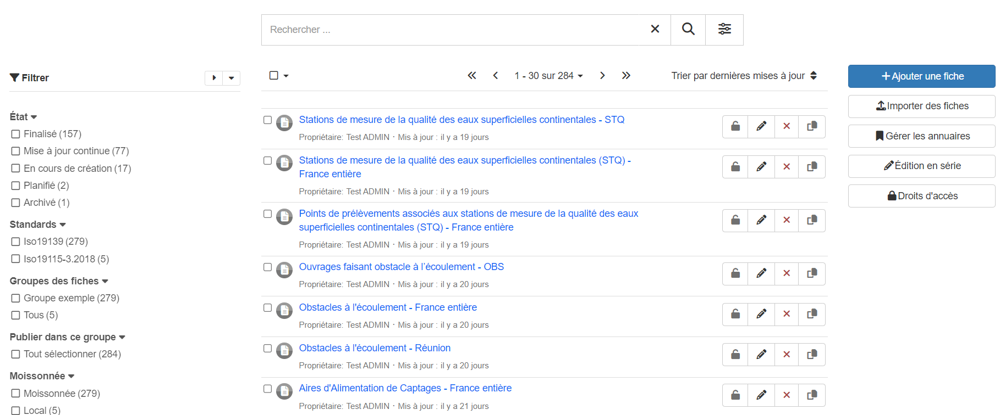
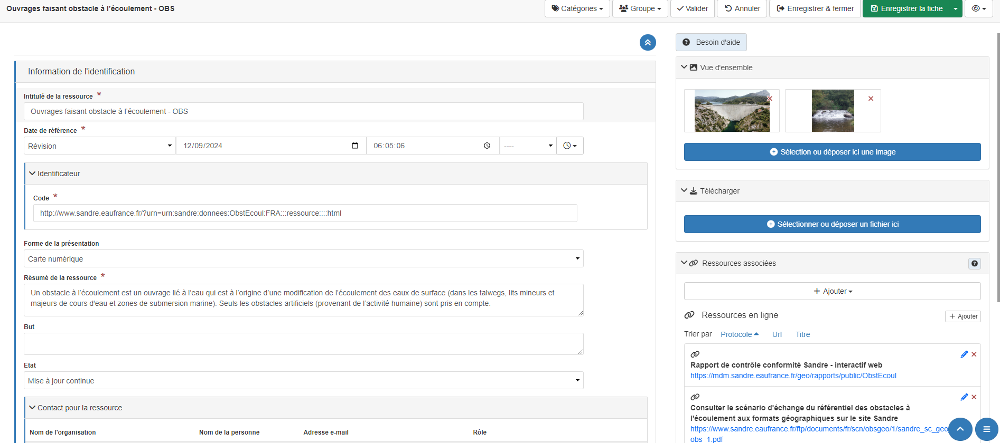
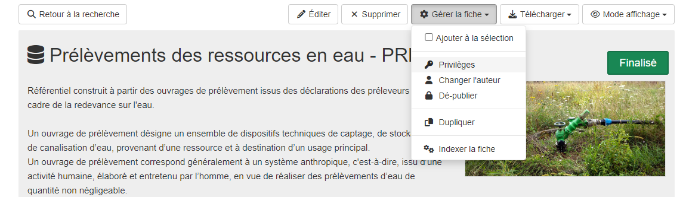
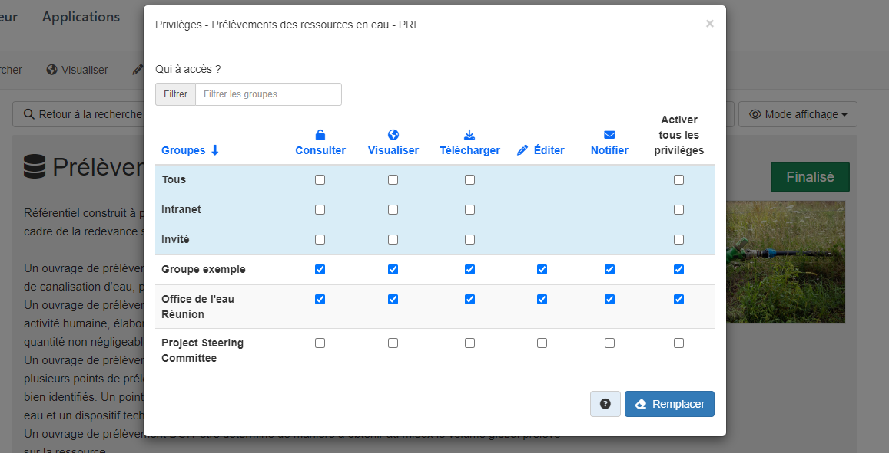
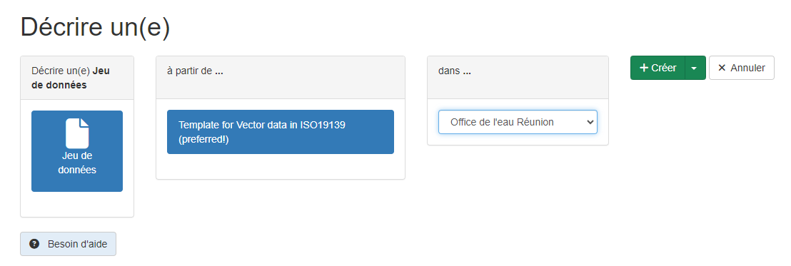
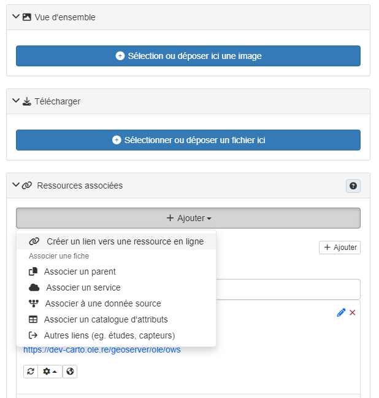
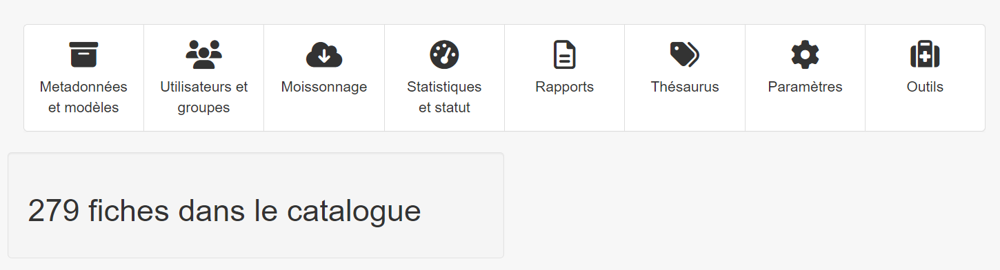
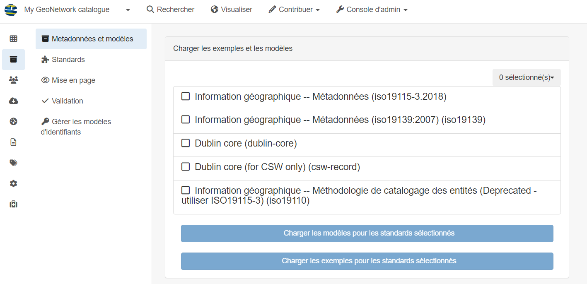

Catalogue - GeoNetwork
Introduction
La technologie utilisée par le catalogue est GeoNetwork, cette documentation à pour but résumer rapidement les différentes options de l’interface mais n’a pas pour vocation de remplacer la documentation officiel : https://docs.geonetwork-opensource.org/4.2/user-guide/
Le GeoNetwork est utilisé comme catalogue CSW (Catalogue Service for the Web) ce qui permet de référencer les métadonnées couplées aux flux de données.
La page principale se compose de 4 composants : la recherche de données, la visualisation, les fiches de métadonnées et l’administration

La recherche de données est la même que dans le catalogue mais avec l’interface basique de GeoNetwork. La visualisation renvoie sur le visualisateur qui est MapStore.
Gestion des fiches de métadonnées
Dans l’onglet « Contribuer » puis « Accueil édition » :
{kind=link}
Cette section fournit une liste des fiches avec les fonctionnalités associées, vous pouvez éditer les fiches, les supprimer, gérer les annuaires (inutile pour geOrchestra), faire de l’édition en série et gérer les droits d’accès.
{kind=link}
Dans l’interface d’édition d’une fiche, vous pouvez changez toutes les informations à gauche de l’écran, et ajouter des éléments à droite. Les ajouts peuvent être des images, des liens ou des ressources qui correspondent à des liens de parentés, des flux OGC ou d’autre.
Gérer les droits d’accès aux fiches de métadonnées
Vous pouvez restraindre l’accès aux fiches de métadonnée, les fiches sont automatiquement visible pour toutes les organisations de l’infrastructure. Si vou voulez modifier les différents droits en fonction des organisations, il faut aller dans la fiche de métadonnée que vous voulez modifier, allez dans « Gérer la fiche » puis « Privilèges » et vous pourrez modifier les accès :
{kind=link}
Vous pouvez modifier l’accès à la consultation simple ou encore, la visualisation, le téléchargement, l’édition ou la notification en fonction des organismes.
{kind=link}
Créer une fiche à la main
Pour créer une fiche à la main, vous pouvez cliquer sur « Contribuer » puis « Ajouter une fiche », choisir « Template for Vector data ISO19139 » :
{kind=link}
Il faut modifier l’intitulé de la ressource et ajouter les flux WMS et WMTS en cliquant sur « Ajouter » et « Créer un lien vers une ressource « :
{kind=link}
Puis renseigner « OGC-WMS Web Map Service » et « OGC-WFS Web Features Service » dans « Protocol » pour avoir un flux WMS et WFS par donnée et le lien vers le geoserver.
Le lien se construit par le fqdn suivis de « geoserver » puis de l’organisation abrégé qui à intégré la donnée avec le datafeeder, par exemple « ole » et enfin « ows ».
Ce qui peux donner : https://dev-carto.ole.re/geoserver/psc/ows et choisir la donnée.
{kind=link}
Administration
Pour ce qui est de l’administration, elle est divisé en 8 catégories :
{kind=link}
Métadonnées et modèles
La page « Métadonnées et modèle » sert à définir les modèles de fiches de métadonnées à utiliser :

{kind=link}
Les modèles de fiches de métadonnées sont gérées automatiquement par le module d’import de geOrchestra.
Utilisateur et groupe
{kind=link}
Les utilisateurs et les organisations sont gérés dans la page Utilisateur
Moissonnage
{kind=link}
Le moissonnage est très utile car il permet de référencer les fiches de métadonnées d’un autre catalogue sur le GeoNetwork interne. Il faut connaître la technologie du catalogue que l’on veut référencer, renseigner l’url puis les différents filtres que l’on veut appliquer. Il est aussi possible de plannifier le moissonnage.
Les moissonnages sont différents en fonction de la technologie du catalogue cible. Voici la documentation officiel pour chaque technologie :
https://docs.geonetwork-opensource.org/4.2/user-guide/harvesting/
Statistique et statut
{kind=link}
Cette section permet de connaître l’état du système très rapidement. L’analyse des liens scanne tous les liens des métadonnées, le versionnement permet de connaître l’état d’une métadonnée précise.
Rapports
{kind=link}
La partie rapport permet de créer des rapports très rapidement :
sur la mise à jour des fiches
sur les fiches stockées en interne
sur l’ajout de fichier dans les fiches
sur l’historique des fiches
sur les accès utilisateurs
Thesaurus
{kind=link}
Le thesaurus est le dictionnaire à mots clés, il définit les mots clés que vous pouvez utiliser pour vos métadonnées. Il est utilisé dans le datafeeder lors du choix des mots clés. Par defaut dans geOrchestra, le thesaurus est définis sur les thèmes INSPIRE, vous pouvez le modifier en ajoutant un thesaurus à la main dans cette interface puis modifier le code qui relie le thesurus au datafeeder.
Par exemple, pour ajouter le glossaire de l’Office internationale de l’eau, il faut télécharger le glossaire au format RDF-XML et cliquer sur « Ajouter un thesaurus » :
{kind=link}
Puis s’assurer que le thesaurus à bien chargé, il peut contenir des valeurs manquantes, le déplier au maximum pour voir les lignes. Pour le glossaire de l’Office internationale de l’eau, lorsque l’on charge au maximum le thesaurus, on le voit en entier même si des « valeurs manquantes » apparaît.
Ensuite, pour l’utiliser dans le datafeeder il faut modifier la ligne dans le fichier /etc/georchestra/datafeeder/frontend-config.json:
"thesaurusUrl": "https://dev-carto.ole.re/geonetwork/srv/api/registries/vocabularies/search?type=CONTAINS&thesaurus=local.theme.glossaire_eau_biodiv_20241021&rows=20000&q=${q}&uri=**&lang=${lang}"
En modifiant l’url en fonction du domaine, l’origine de thesaurus, « local » ou « externe », le type qui est ici « theme », le nom, ici « glossaire_eau_biodiv_20241021 » et ne pas hésiter à rajouter des lignes si le thesaurus est long comme celui de L’oieau : « rows=20000 ».
Puis relancer le datafeeder :
systemctl restart datafeeder.service
Paramètres
{kind=link}
Dans cet onglet se trouve les paramètres pour la configuration système dont voici la documentation en details :
Sur cette partie se trouve aussi les paramètre pour changer l’interface utilisateur, changer le style, ajouter des logos, gérer les différents catalogues moissonnés, gérer les différentes langues, activer et tester le CSW, ajouter des serveurs cartographiques type GeoServer et ajouter des pages statiques.
Outils
{kind=link}
Cette partie permet d’inéragir avec les indexs d’elasticsearch qui est le moteur de recherche derrière GeoNetwork. Cela permet de relancer l’indexation des données. ll ne faut globalement pas cliquer sur ces boutons.